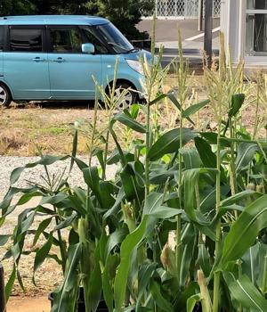
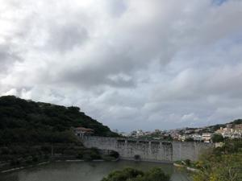

うるがいの話 ある日
最新: デジタル商品券【うるがいの話 ある日】とは 一日だけのプログです
『うるがいの話』の最新一日だけのプログで、通信料が少なく経済的だ。カニの画像をクリックすると全ての日付が載る『うるがいの話』サイトを表示します
|
|
【うるがいの話】 うるがい(ｳﾙｶﾞｲ urugai)とは、『もずくがに』の名前でとても大きくなります。 |
|---|---|
|
|
【Got cat カミマヤーの話】 たながー（ﾀﾅｶﾞｰtanagaa）とは手長えびのことで、何種類かあり大きいのは車 エビぐらいになります。 |

|
【ぶながぁの話】 ぶながー(bunagaa)とは、赤い髪の毛、赤い身体、そして身長は１ｍ２０ｃｍ ぐらい、川の蟹を食べているの目撃された。場所は沖縄県国頭郡大宜味村のと ある村僕の隣近所に住んでいる爺さんから、聞いた話です。 |
|
|
【ギーマの話】 ギーマ(giima)とは、山原の里山に咲くスズランに似た、 花を付けます。実は食べられます、 気が付くと口の周りが紫になっています。 |
2021年12月01日 (水）デジタル商品券
15:45
 
口角炎の傷口が完全にふさぎ自力で治おり少し痛みがあった腰痛もおとといか
ら快復に向かい（治っていくと感じとる事ができた）多少は痛みがあるが大丈
夫だ。元気が一番である。プレミアム率３０％のなは買エール商品券（デジタ
ル商品券）、１万円分をスマホで購入する。スマホリテラシ（活用能力）が低
く、なかなかてこづった。購入の抽選で当選（多分、皆当選している）したヨ
メは、スマホの操作（メールアドレスが、携帯会社が設定したとんでもない英
数字で構成されて打ち込み困難、変更すればいいのに）が難しいのでパスする
ことになった。ここにいたるまでなかなか手こずる、コンビニの選択する操作
も間違ったようで、ファミリーマートを選ぶも初期設定のセブンイレブンでの
現金支払いになってしまった。げ！、近くにあるセブンイレブンはと、なにか
と大変なのである。支払方法はａｕ－ＰＡＹで事前学習済なので大丈夫。それ
にしても、その筋の私だが、スマホでの操作を前提としたデジタル化には苦労
する。
１５時４０分 ビットコインの総資産 ￥１８，７４０